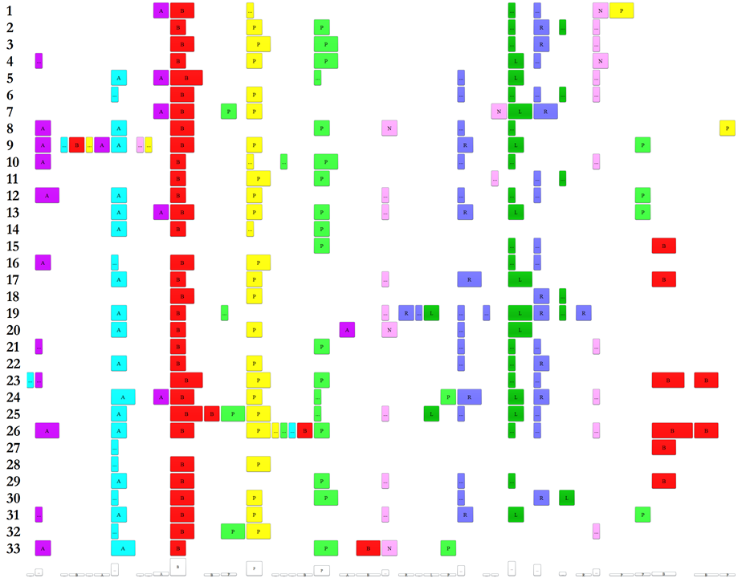
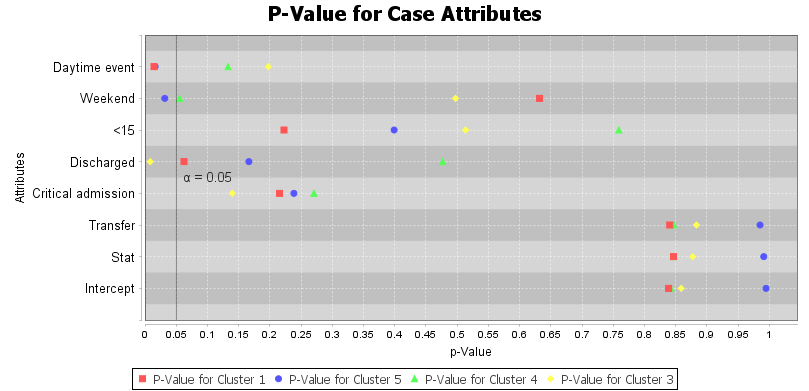
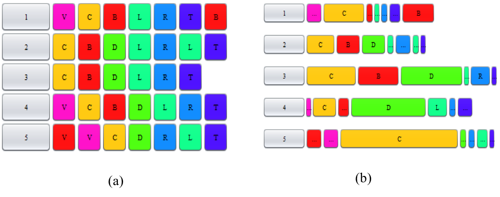
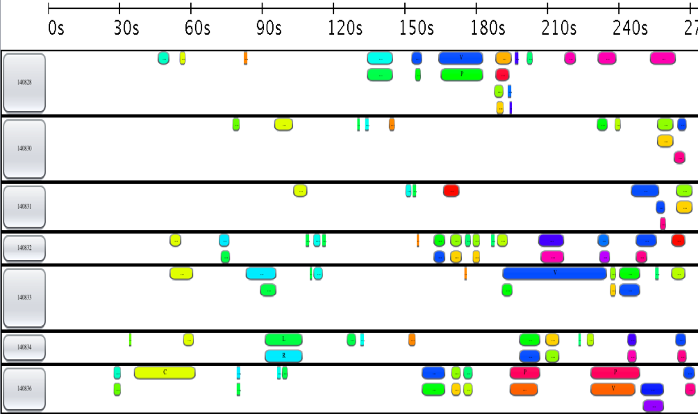
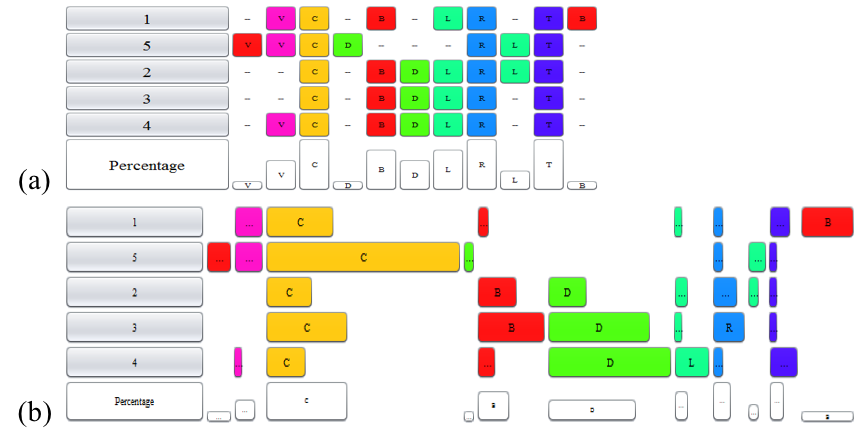
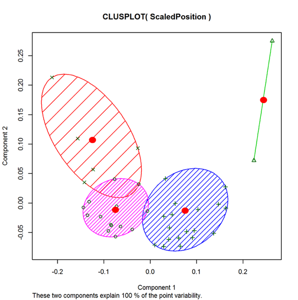
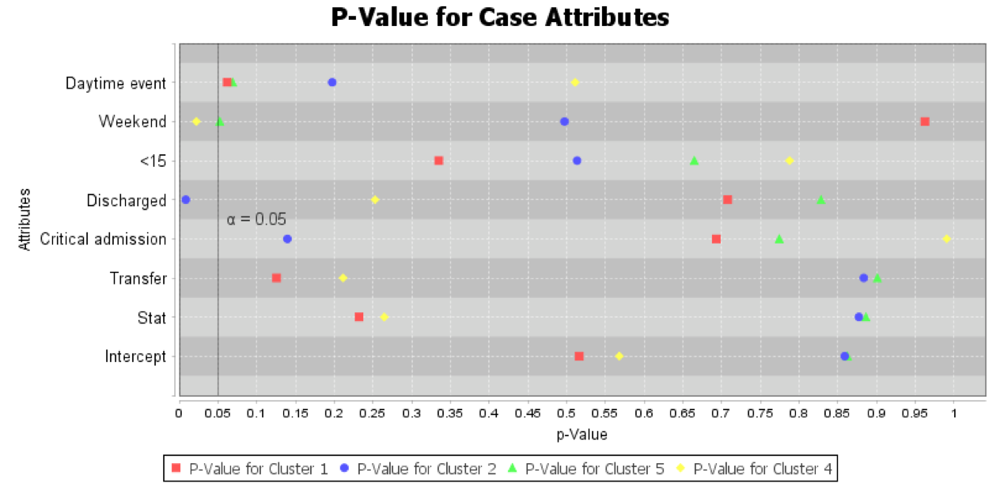

Sen (Forrest) Yang
Sen Yang joined Rutgers University’s graduate program in Electrical and Computer Engineering in September 2013. He started his Ph.D. program in September 2014. Since then he has been on a Graduate Assistant (Research Assistant) appointment. He is highly dedicated to his research work and leading a research team consists of 1 PhD student, 3 master students and 2 undergraduate students.
His background is in data mining, process mining and health informatics and he has several publications on this topic. His current research is on algorithms for automatically identify deviations from established practices in the trauma resuscitation process using process-mining technologies (Conformance Checking, Petri Net and Trace Alignment). With the deviations identified, he used statistical techniques, hypothesis test, to verify whether the number of deviations is positively correlated with the number of major errors. The application of this analysis will be used to predict human errors.
He is working with a team of surgeons and nurses from Children’s National Medical Center, Washington, DC. They are providing expert knowledge and detailed descriptions of activities in trauma
resuscitation events.
Publications
Conference Papers

Duration-Aware Alignment of Process Traces
Sen Yang, Moliang Zhou, Rachel Webman, JaeWon Yang, Aleksandra Sarcevic, Ivan Marsic and Randall S. Burd
16th Industrial Conference on Data Mining ICDM 2016, Mar 2016

Visual Interactive Tool on Trace Alignment and Trace Attributes
Sen Yang, Xin Dong, Moliang Zhou, Rachel Webman, JaeWon Yang, Aleksandra Sarcevic, Ivan Marsic and Randall S. Burd
KDD 2016 Workshop on Interactive Data Exploration and Analytics (IDEA)
Features

Trace visualization - Simple Stack
Simply stack activities in the process executions (Figure (a) without duration and Figure (b) with duration). This is the simplest way to visualize process traces. Activities are stacked based on the occurrence time. Activity information can be accessed with mouse click on the corresponding block. This is simple and fast but user will easily get confused.

Trace visualization - Overlay on Timeline
Overlay the process execution on the timeline (Figure). This is a very helpful way of visualizing processes. Activities are scaled based on duration and aligned with timeline based on the start and end time.
The greatest advantage of this visualization approach is that it clearly shows the concurrent activities in processes.

Trace Visualization - Process Trace Alignment
Process trace alignment (Figure (a) context-aware alignment and Figure (b) duration-aware alignment). The context-aware trace alignment algorithm is based on JC’s work. The duration-aware trace alignment algorithm was proposed in our previous research. The duration of the activity in consensus sequence of duration-aware trace alignment is the mean value of the activity duration in that column. Compared with simple stack and overlay on timeline, the aligned processes are easier for user/reader to understand their data and obtain more useful insights.

Simplified Visualization of Process Trace
Due to the limitation of the interface space, it is usually difficult to visualize 100 sequences simultaneously on a single screen. When the trace number become 1,000.
However, the data we are dealing with today might be 10k, 100k. To address this issue, we come up with an idea to simplify the visualization with trace clustering techniques. Our strategy can be concluded as follows:
Cluster the sequences based on sequence similarity. For each cluster, find one sequence that can be used to best represent that cluster.
Visualize the data using these “Cluster Representative Sequences” rather than using the original data.

Association between Trace Cluster and Trace Attribute
Through trace clustering, we can obtain clusters of traces that are similar to each other.
The similarity here also represents the similar work practice of the medical team. We want to find out if the work
practice is affected by the trace/patient. If we can find significant correlations between clusters and attributes,
we can know given the specific trace attributes, what kind of workflow practice (represented as cluster prototype)
is more probable to be observed.

Log with Error Generator Panel
Log with Error Generator Panel generates event log with random deviations of commission and omission.
The number of deviations can be costumed by user.
Commission Rate or Omission Rate customizes the error rate for corresponding deviations and the value is transformed into percentage
Error per Trace indicates the number of deviations (commission and omission) that occur within one single trace.
Fix error rate sets the number of deviations will be the same as the value of Error per Trace slide bar.
Generate button generates the log with error, and Export button writes the log into default directory with name Log_withError.csv and Log_withError_Stamp.csv.

Evaluation Panel
Read Alignment reads the alignment result, which should be exported in Trace Alignment Panel.
Read Reference reads alignment reference.
Evaluation makes alignment evaluation on alignment result by taking Alignment Reference as reference; reverse evaluation is the other way around.
Frequency Threshold chooses the frequency for pattern in misalignment score calculation.
Misalignment Score T runs experiment with threshold from the value chosen in Frequency Threshold to the highest frequency of the pattern within alignment.
Length Increment chooses the value for target alignment length, and split columns in alignment to gain one increment in length each time to reach the target length.
By selecting the Auto Evaluation and click Generate Error Alignment, the alignment with split columns will be generated and evaluated; if Auto Evaluation is not selected, then only generate alignment with split columns.
Sponsors
We gratefully acknowledge the funding provided by National
Institutes of Health (NIH) and Children's National Medical Center (CNMC)
Download
Visual Interactive Tool on Trace Alignment and Trace Attribute is still under development,
so we have not made the software publicly available yet.
However, if you have data that you would like to analyze with it,
please contact sy358@scarletmail.rutgers.edu with a description of your project
and we will discuss it and give you feedback.